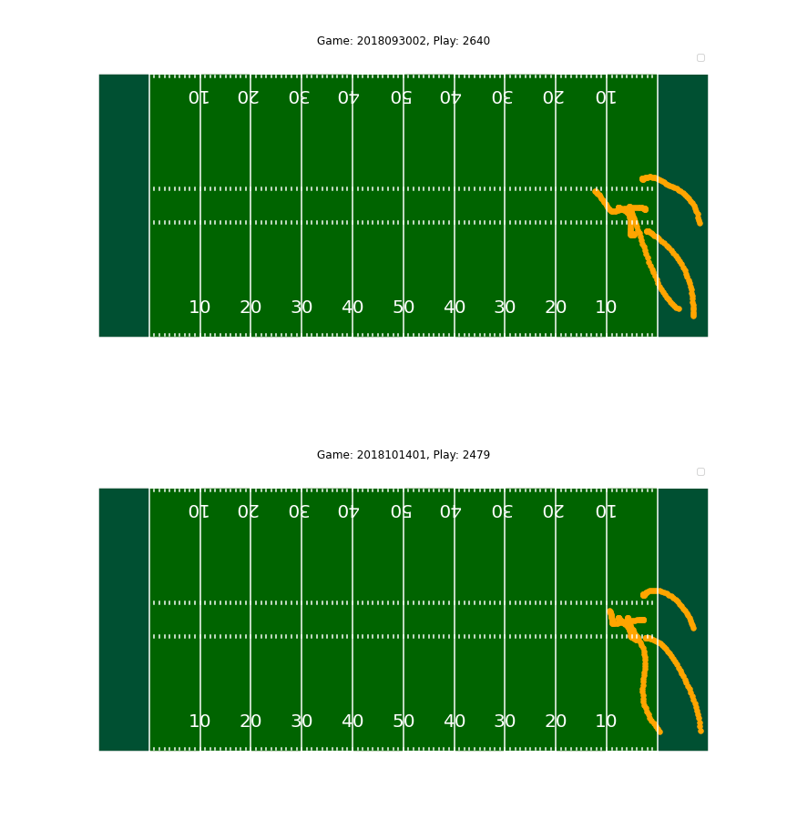
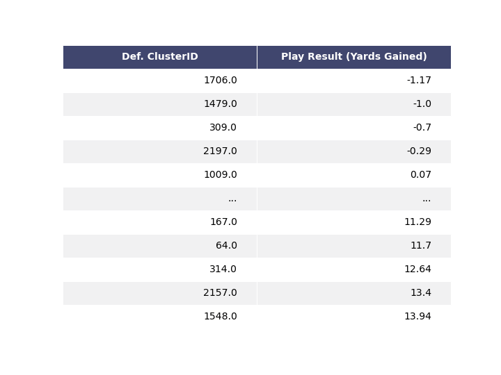

To see the competition submission, which includes the full writeup and all visuals, click here.
The NFL captures real-time data for every player, on every play, in every situation — anywhere on the field. Each year, they hold an analytics competition to help draw insights from their plethora of positional data. This year, the NFL asked contestants to uncover what makes for a successful defense against passing plays.
Gaining a better understanding of NFL defensive play efficacy can improve a team's chance of success. One can simply use existing NFL dataset fields such as offensive formation or defenders in the box to improve play efficacy knowledge. However, these fields contain more coarse information and may not offer key insight into play performance.
I teamed up with my dad (John Pfeifer, PhD computer science candidate at the University of Sydney) to contribute a novel data mining method that automatically determines a set of offensive and defensive play type categories based on the movement of the players and the football. My dad largely taught me about the research topics that were utilized, and I coded all of the implementations and performed the exploratory data analysis and project writeup.
Our novel data mining method automatically determines a set of offensive and defensive play type categories based on the movement of the players and the football. In summary, we transform offensive and defensive player movement from each play into trajectories in higher dimensional space and cluster them into similar play categories.
For proof of concept, the algorithm clustered two defensive plays shown below into the same play category. Visually, it is easy to verify that the two plays are quite similar.
After creating the clusters, we were able to perform exploratory data analysis to uncover trends in defensive play efficacy. A few notable results are shown below.
We can see which defensive clusters resulted in, on average, the least number of yards gained by the offense.
The heatmap below shows five of the most common defensive and offensive play categories used throughout the season and compares how well they perform against one another based on yards gained by the offensive team. Certain offensive play clusters work better against certain defensive clusters, and vice versa.
In the future, perhaps I would explore using other trajectory distance measures such as the Fréchet distance (this computes a worst-case distance, but may be useful for some types of analysis). Other clustering algorithms such as k-means or more recent techniques may result in more meaningful clusters. Furthermore, the supplied tracking table usually did not include all players movement - it would be interesting to see clusters that are created from "full" data.
Take a look at the code for the preprocessing and clustering here.
Skills & tools: Python, clustering, algorithm design, data cleaning/processing